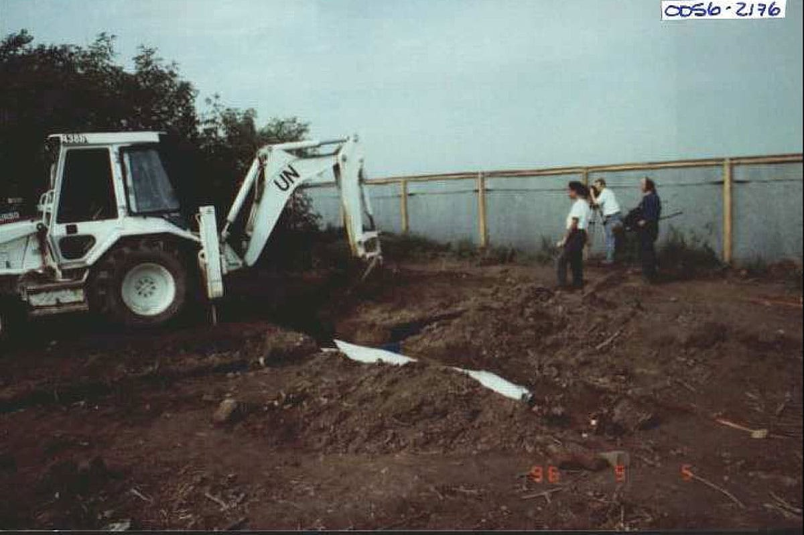
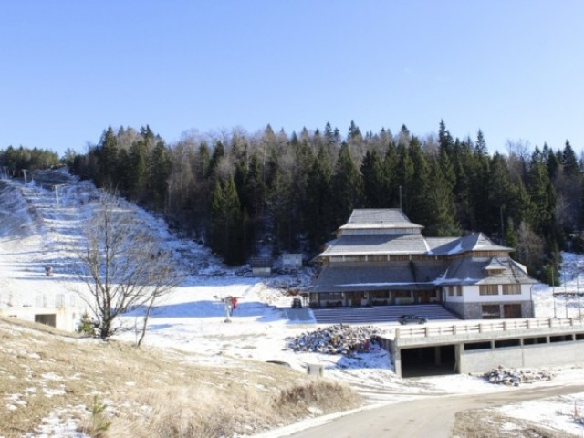

Welcome!
Milica Stojanović is an investigative journalist, skilled in researching bussinesses, legislations, threats to digital freedoms, enviroment endangering and international humanitarian law.
She has over a decade long experience in working in Serbia.
Some of the most important stories
Hiding Behind Telegram, Pay-Per-Like Scammers Hook Unwitting Serbians
Fraudsters are targeting Serbians on Telegram, promising work and investment opportunities but ultimately stealing their money.
Preparing for War: How WWII Serb Suffering Was Weaponised Decades Later
As tensions grew in Yugoslavia, Serbia used the crimes committed by the fascist Ustasha forces of World War Two to whip up fear and hatred of Croats, preparing the public for war.

The Vukovar Murders: Which Units Killed Civilians in Croatia in 1991?
BIRN’s analysis of Hague Tribunal evidence reveals which Yugoslav People’s Army and Serb paramilitary units were deployed in villages around Vukovar in Croatia in November 1991 when Croat civilian prisoners were murdered after the town fell.

Mokra Gora Dream: A State-owned Hotel without a Licence, Kusturica's Drvengrad Full with Guests
National Ecological Centre, managed by the Nature Park and tourist settlement Drvengrad, owned by Emir Kusturica, are both located in Mokra Gora. While Drvengrad runs its business successfully hosting thousands of visitors, the Centre welcomes no tourists at all in spite of the fact that six years have passed since its opening. While previously holding the position of the director, Kusturica is now the president of the Nature Park’s Assembly.

Detailed CV
Balkan Investigative Reporting Network (BIRN) – Journalist and Editor
June 2019 - June 2026
Balkan Insight: News, analysis and investigative stories on topics related to judiciary, environment, human rights, minority rights, digital rights, public money spending, and similar in Serbia; Cross border work with journalist from all countries BIRN is covering.
Balkan Transitional Justice: News, analysis and investigative stories about 1990s war crimes and transitional justice processes in Serbia; Stories related to war in Ukraine, mostly when it comes to media freedom but also criminal justice efforts; News related to some of the ICJ and ICC cases. All stories are available here.
Editorial: Member of the editorial team; Once a month, in a week long period, I coordinate work of journalists from 10 countries and editors and translators in publishing stories for the day as well as in planning future work; Actively involved in preparation news, analysis, features and interviews for editing process.
Mentoring: Providing mentorship in projects BIRN provides to local media or local journalists in all countries it covers, some of these stories were part of BIRN’s Digital Rights Program, while most of them werempart of projects where the main activity is usage of BIRN’s Engaged Citizens Reporting tool.
Fact Checking: From time to time I am tasked with fact checking of investigative stories; I was one of co-creators of Balkan Insight Fact checking rulebook.
Centre for Investigative Reporting of Serbia (CINS) – Journalist
November 2013 - January 2019
Investigative stories on judiciary, public money spending, corruption, environment, human rights, privatizations.
Training security, FOIA rules, databases and Excel in CINS’s schools for journalists.
Stories in Serbian are available here.
Stories in English are available here.
Telgraf – Journalist
January 2012 - Septembar 2013
News, features on politics, environment, society, crimes.
Editor of Belgrade Section; content editor and coordinator on weekend and night shifts.